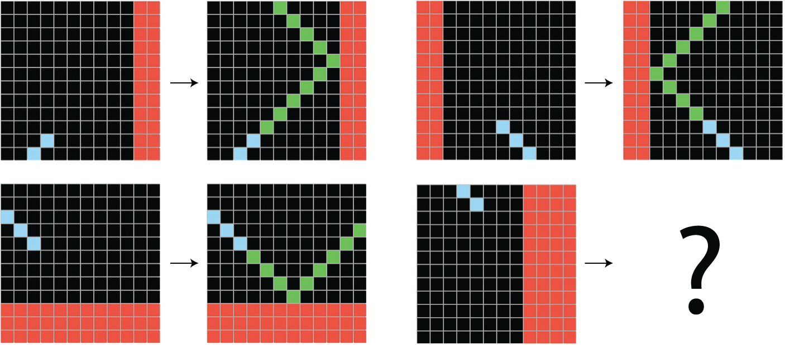

Chapter 18: Best practices for the real world
What is needed to scale a proof of concept to a real-world model
Chapter 19: The future of AI
Chollet’s argument for what deep learning is and isn’t
Chapter 20: Conclusions
A bird’s-eye review of everything, and where to go next
Less code this week, more discussion — this is our last session
Squeezing more performance:
Training & serving faster:
| Set by | Example | |
|---|---|---|
| Parameters | Backpropagation | Layer weights |
| Hyperparameters | Experience and/or search | # units, # layers, learning rate |
Int(name="units", min_value=16, max_value=64, step=16)Float, Boolean, Choicehp, or subclass HyperModel| Tuner | Idea |
|---|---|
GridSearch |
Try every combination |
RandomSearch |
Sample the space at random |
BayesianOptimization |
Balance exploit vs explore |
| Strategy | What’s split | When |
|---|---|---|
| Data parallelism | The batch | Model fits on one device (common case) |
| Model parallelism | The model | Model too big for one device |
| Type | Bits | Resolution |
|---|---|---|
float32 |
32 | ~1e-7 (the default) |
float16 |
16 | ~1e-3 |
bfloat16 |
16 | wider range, coarser |
int8 |
8 | integer inference |
LossScaleOptimizer auto-tunes it)Deep learning models are vast, interpolative databases of patterns — not reasoning engines.
“Never fall into the trap of believing that neural networks understand the task they perform.”
| Local generalization | Extreme generalization | |
|---|---|---|
| Who | Deep nets | Humans, advanced animals |
| How | Interpolate on the data manifold | Abstraction & reasoning |
| Handles | “Known unknowns” | “Unknown unknowns” |
| Data need | Millions of examples | A handful |
The ability to efficiently use the information at your disposal to produce successful behavior in the face of an uncertain, ever-changing future.

ARC example
| Value-centric abstraction | Program-centric abstraction |
|---|---|
| Similarity / distance | Exact structural match |
| Perception, intuition | Reasoning, planning |
| Immediate, fuzzy, approximate | Slow, exact, rigorous |
| Needs lots of data | Works from few examples |
| Deep learning has this | Deep learning lacks this |
Chollet’s sketch of a path to AGI:
Agentic AI & reasoning models (o-series, extended thinking, tool use, code execution)
ARC-AGI keeps moving
The nested definitions:
In one line: sufficiently large parametric models trained with gradient descent — everything geometric: vectorize the data, uncrumple the manifold.
| Input | Output | Architecture |
|---|---|---|
| Vector data | Class / regression | Dense network |
| Timeseries | Class / regression | RNN or Transformer |
| Images | Class / regression | ConvNet |
| Text | Class / regression | Transformer |
| Text + images | Text | Transformer |
| Text + images | Images | VAE or Diffusion |
Learning is a lifelong journey — especially in AI, where the unknowns still vastly outnumber the certainties.